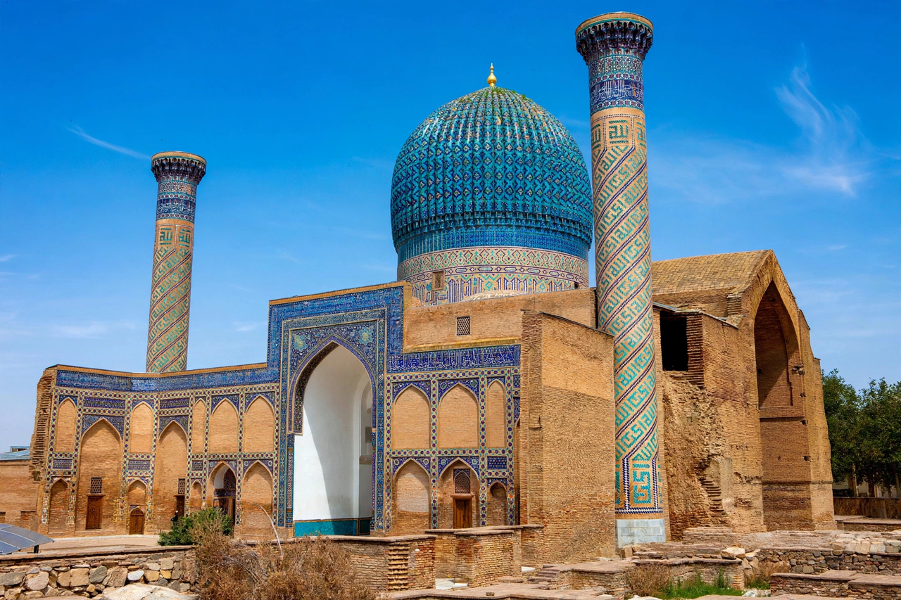

Gur-e-Amir
From Wikipedia, the free encyclopedia

The Gur-e-Amir (Persian: 'Tomb of the King') is the mausoleum of the Turco-Mongol conqueror Timur (Amir Timur, Tamerlane) in Samarkand, Uzbekistan. Built in 1403–1404 for Timur's grandson and heir Muhammad Sultan and then used for Timur himself and his descendants, its ribbed, fluted turquoise dome is a masterpiece of Timurid architecture and a prototype for later Mughal tombs including the Taj Mahal.
History
Muhammad Sultan died in 1403 on campaign; Timur ordered the mausoleum built beside the madrasa and khanqah his grandson had founded, and on Timur's own death in 1405 (on campaign against Ming China) he was interred there despite his simpler tomb prepared at Shahrisabz. His son Shah Rukh and grandson Ulugh Beg — the astronomer king — were later buried in the crypt, as was Timur's spiritual teacher Mir Said Baraka.
Architecture
The complex centres on a high cylindrical drum bearing a fluted double dome in turquoise and blue glazed brick, inscribed with monumental Kufic lettering praising the tomb. Inside, the cenotaphs — Timur's marked by a celebrated slab of dark green jade, once among the largest jade pieces in the world — sit above the actual crypt. The portal (pishtaq) and restored courtyard showcase Timurid tile mosaics.
The 'curse' legend
Soviet archaeologists under Mikhail Gerasimov exhumed Timur on 19–20 June 1941, days before Germany invaded the USSR — spawning the legend of 'Timur's curse' inscribed on the tomb. Gerasimov reconstructed Timur's face from his skull, confirming lameness (hence 'Tamerlane', Timur the Lame). The mausoleum, within the UNESCO World Heritage Site 'Samarkand — Crossroads of Cultures', remains Uzbekistan's emblematic monument.